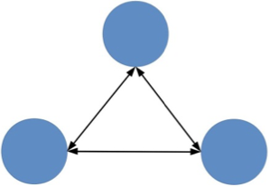
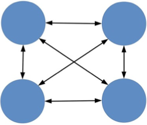
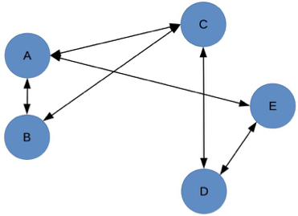
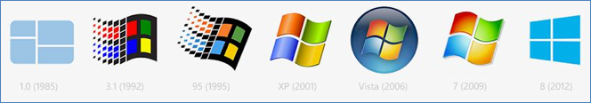
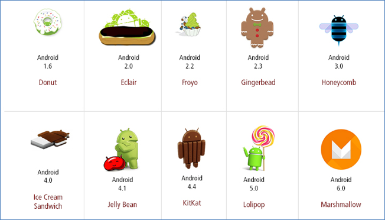

- 00 开篇词 照着做，你也能成为架构师！.md.html
- 01 架构到底是指什么？.md.html
- 02 架构设计的历史背景.md.html
- 03 架构设计的目的.md.html
- 04 复杂度来源：高性能.md.html
- 05 复杂度来源：高可用.md.html
- 06 复杂度来源：可扩展性.md.html
- 07 复杂度来源：低成本、安全、规模.md.html
- 08 架构设计三原则.md.html
- 09 架构设计原则案例.md.html
- 10 架构设计流程：识别复杂度.md.html
- 11 架构设计流程：设计备选方案.md.html
- 12 架构设计流程：评估和选择备选方案.md.html
- 13 架构设计流程：详细方案设计.md.html
- 14 高性能数据库集群：读写分离.md.html
- 15 高性能数据库集群：分库分表.md.html
- 16 高性能NoSQL.md.html
- 17 高性能缓存架构.md.html
- 18 单服务器高性能模式：PPC与TPC.md.html
- 19 单服务器高性能模式：Reactor与Proactor.md.html
- 20 高性能负载均衡：分类及架构.md.html
- 21 高性能负载均衡：算法.md.html
- 22 想成为架构师，你必须知道CAP理论.md.html
- 23 想成为架构师，你必须掌握的CAP细节.md.html
- 24 FMEA方法，排除架构可用性隐患的利器.md.html
- 25 高可用存储架构：双机架构.md.html
- 26 高可用存储架构：集群和分区.md.html
- 27 如何设计计算高可用架构？.md.html
- 28 业务高可用的保障：异地多活架构.md.html
- 29 异地多活设计4大技巧.md.html
- 30 异地多活设计4步走.md.html
- 31 如何应对接口级的故障？.md.html
- 32 可扩展架构的基本思想和模式.md.html
- 33 传统的可扩展架构模式：分层架构和SOA.md.html
- 34 深入理解微服务架构：银弹 or 焦油坑？.md.html
- 35 微服务架构最佳实践 - 方法篇.md.html
- 36 微服务架构最佳实践 - 基础设施篇.md.html
- 37 微内核架构详解.md.html
- 38 架构师应该如何判断技术演进的方向？.md.html
- 39 互联网技术演进的模式.md.html
- 40 互联网架构模板：存储层技术.md.html
- 41 互联网架构模板：开发层和服务层技术.md.html
- 42 互联网架构模板：网络层技术.md.html
- 43 互联网架构模板：用户层和业务层技术.md.html
- 44 互联网架构模板：平台技术.md.html
- 45 架构重构内功心法第一式：有的放矢.md.html
- 46 架构重构内功心法第二式：合纵连横.md.html
- 47 架构重构内功心法第三式：运筹帷幄.md.html
- 48 再谈开源项目：如何选择、使用以及二次开发？.md.html
- 49 谈谈App架构的演进.md.html
- 50 架构实战：架构设计文档模板.md.html
- 51 如何画出优秀的软件系统架构图？.md.html
- 加餐｜业务架构实战营开营了.md.html
- 加餐｜单服务器高性能模式性能对比.md.html
- 加餐｜扒一扒中台皇帝的外衣.md.html
- 如何高效地学习开源项目 华仔，放学别走！ 第3期.md.html
- 新书首发 《从零开始学架构》.md.html
- 架构专栏特别放送 华仔，放学别走！ 第2期.md.html
- 架构专栏特别放送 华仔，放学别走！第1期.md.html
- 架构师必读书单 华仔，放学别走！ 第5期.md.html
- 架构师成长之路 华仔，放学别走！ 第4期.md.html
- 结束语 坚持，成就你的技术梦想.md.html
- 捐赠
08 架构设计三原则
前面几期专栏，我跟你系统的聊了架构设计的主要目的是为了解决软件系统复杂度带来的问题，并分析了复杂度的来源。从今天开始，我会分两期讲讲架构设计的3个原则，以及架构设计原则的案例。
成为架构师是每个程序员的梦想，但并不意味着把编程做好就能够自然而然地成为一个架构师，优秀程序员和架构师之间还有一个明显的鸿沟需要跨越，这个鸿沟就是“不确定性”。
对于编程来说，本质上是不能存在不确定的，对于同样一段代码，不管是谁写的，不管什么时候执行，执行的结果应该都是确定的（注意：“确定的”并不等于“正确的”，有bug也是确定的）。而对于架构设计来说，本质上是不确定的，同样的一个系统，A公司和B公司做出来的架构可能差异很大，但最后都能正常运转；同样一个方案，A设计师认为应该这样做，B设计师认为应该那样做，看起来好像都有道理……相比编程来说，架构设计并没有像编程语言那样的语法来进行约束，更多的时候是面对多种可能性时进行选择。
可是一旦涉及“选择”，就很容易让架构师陷入两难的境地，例如：
- 是要选择业界最先进的技术，还是选择团队目前最熟悉的技术？如果选了最先进的技术后出了问题怎么办？如果选了目前最熟悉的技术，后续技术演进怎么办？
- 是要选择Google的Angular的方案来做，还是选择Facebook的React来做？Angular看起来更强大，但React看起来更灵活？
- 是要选MySQL还是MongoDB？团队对MySQL很熟悉，但是MongoDB更加适合业务场景？
- 淘宝的电商网站架构很完善，我们新做一个电商网站，是否简单地照搬淘宝就可以了？
还有很多类似的问题和困惑，关键原因在于架构设计领域并没有一套通用的规范来指导架构师进行架构设计，更多是依赖架构师的经验和直觉，因此架构设计有时候也会被看作一项比较神秘的工作。
业务千变万化，技术层出不穷，设计理念也是百花齐放，看起来似乎很难有一套通用的规范来适用所有的架构设计场景。但是在研究了架构设计的发展历史、多个公司的架构发展过程（QQ、淘宝、Facebook等）、众多的互联网公司架构设计后，我发现有几个共性的原则隐含其中，这就是：合适原则、简单原则、演化原则，架构设计时遵循这几个原则，有助于你做出最好的选择。
合适原则
合适原则宣言：“合适优于业界领先”。
优秀的技术人员都有很强的技术情结，当他们做方案或者架构时，总想不断地挑战自己，想达到甚至优于业界领先水平是其中一个典型表现，因为这样才能够展现自己的优秀，才能在年终KPI绩效总结里面骄傲地写上“设计了XX方案，达到了和Google相同的技术水平”“XX方案的性能测试结果大大优于阿里集团的YY方案”。
但现实是，大部分这样想和这样做的架构，最后可能都以失败告终！我在互联网行业见过“亿级用户平台”的失败案例，2011年的时候，某个几个人规模的业务团队，雄心勃勃的提出要做一个和腾讯QQ（那时候微信还没起来）一拼高下的“亿级用户平台”，最后结果当然是不出所料的失败了。
为什么会这样呢？
再好的梦想，也需要脚踏实地实现！这里的“脚踏实地”主要体现在下面几个方面。
1.将军难打无兵之仗
大公司的分工比较细，一个小系统可能就是一个小组负责，比如说某个通信大厂，做一个OM管理系统就有十几个人，阿里的中间件团队有几十个人，而大部分公司，整个研发团队可能就100多人，某个业务团队可能就十几个人。十几个人的团队，想做几十个人的团队的事情，而且还要做得更好，不能说绝对不可能，但难度是可想而知的。
没那么多人，却想干那么多活，是失败的第一个主要原因。
2.罗马不是一天建成的
业界领先的很多方案，其实并不是一堆天才某个时期灵机一动，然后加班加点就做出来的，而是经过几年时间的发展才逐步完善和初具规模的。阿里中间件团队2008年成立，发展到现在已经有十年了。我们只知道他们抗住了多少次“双11”，做了多少优秀的系统，但经历了什么样的挑战、踩了什么样的坑，只有他们自己知道！这些挑战和踩坑，都是架构设计非常关键的促进因素，单纯靠拍脑袋或者头脑风暴，是不可能和真正实战相比的。
没有那么多积累，却想一步登天，是失败的第二个主要原因。
3.冰山下面才是关键
可能有人认为，业界领先的方案都是天才创造出来的，所以自己也要造一个业界领先的方案，以此来证明自己也是天才。确实有这样的天才，但更多的时候，业界领先的方案其实都是“逼”出来的！简单来说，“业务”发展到一定阶段，量变导致了质变，出现了新的问题，已有的方式已经不能应对这些问题，需要用一种新的方案来解决，通过创新和尝试，才有了业界领先的方案。GFS为何在Google诞生，而不是在Microsoft诞生？我认为Google有那么庞大的数据是一个主要的因素，而不是因为Google的工程师比Microsoft的工程师更加聪明。
没有那么卓越的业务场景，却幻想灵光一闪成为天才，是失败的第三个主要原因。
回到我前面提到的“亿级用户平台”失败的例子，分析一下原因。没有腾讯那么多的人（当然钱差得更多），没有QQ那样海量用户的积累，没有QQ那样的业务，这个项目失败其实是在一开始就注定的。注意这里的失败不是说系统做不出来，而是系统没有按照最初的目标来实现，上面提到的3个失败原因也全占了。
所以，真正优秀的架构都是在企业当前人力、条件、业务等各种约束下设计出来的，能够合理地将资源整合在一起并发挥出最大功效，并且能够快速落地。这也是很多BAT出来的架构师到了小公司或者创业团队反而做不出成绩的原因，因为没有了大公司的平台、资源、积累，只是生搬硬套大公司的做法，失败的概率非常高。
简单原则
简单原则宣言：“简单优于复杂”。
软件架构设计是一门技术活。所谓技术活，从历史上看，无论是瑞士的钟表，还是瓦特的蒸汽机；无论是莱特兄弟发明的飞机，还是摩托罗拉发明的手机，无一不是越来越精细、越来越复杂。因此当我们进行架构设计时，会自然而然地想把架构做精美、做复杂，这样才能体现我们的技术实力，也才能够将架构做成一件艺术品。
由于软件架构和建筑架构表面上的相似性，我们也会潜意识地将对建筑的审美观点移植到软件架构上面。我们惊叹于长城的宏伟、泰姬陵的精美、悉尼歌剧院的艺术感、迪拜帆船酒店的豪华感，因此，对于我们自己亲手打造的软件架构，我们也希望它宏伟、精美、艺术、豪华……总之就是不能寒酸、不能简单。
团队的压力有时也会有意无意地促进我们走向复杂的方向，因为大部分人在评价一个方案水平高低的时候，复杂性是其中一个重要的参考指标。例如设计一个主备方案，如果你用心跳来实现，可能大家都认为这太简单了。但如果你引入ZooKeeper来做主备决策，可能很多人会认为这个方案更加“高大上”一些，毕竟ZooKeeper使用的是ZAB协议，而ZAB协议本身就很复杂。其实，真正理解ZAB协议的人很少（我也不懂），但并不妨碍我们都知道ZAB协议很优秀。
刚才我聊的这些原因，会在潜意识层面促使初出茅庐的架构师，不自觉地追求架构的复杂性。然而，“复杂”在制造领域代表先进，在建筑领域代表领先，但在软件领域，却恰恰相反，代表的是“问题”。
软件领域的复杂性体现在两个方面：
1.结构的复杂性
结构复杂的系统几乎毫无例外具备两个特点：
- 组成复杂系统的组件数量更多；
- 同时这些组件之间的关系也更加复杂。
我以图形的方式来说明复杂性：
2个组件组成的系统：
3个组件组成的系统：

4个组件组成的系统：

5个组件组成的系统：

结构上的复杂性存在的第一个问题是，组件越多，就越有可能其中某个组件出现故障，从而导致系统故障。这个概率可以算出来，假设组件的故障率是10%（有10%的时间不可用），那么有3个组件的系统可用性是（1-10%）×（1-10%）×（1-10%）= 72.9%，有5个组件的系统可用性是（1-10%）×（1-10%）×（1-10%）×（1-10%）×（1-10%）=59%，两者的可用性相差13%。
结构上的复杂性存在的第二个问题是，某个组件改动，会影响关联的所有组件，这些被影响的组件同样会继续递归影响更多的组件。还以上面图中5个组件组成的系统为例，组件A修改或者异常时，会影响组件B/C/E，D又会影响E。这个问题会影响整个系统的开发效率，因为一旦变更涉及外部系统，需要协调各方统一进行方案评估、资源协调、上线配合。
结构上的复杂性存在的第三个问题是，定位一个复杂系统中的问题总是比简单系统更加困难。首先是组件多，每个组件都有嫌疑，因此要逐一排查；其次组件间的关系复杂，有可能表现故障的组件并不是真正问题的根源。
2.逻辑的复杂性
意识到结构的复杂性后，我们的第一反应可能就是“降低组件数量”，毕竟组件数量越少，系统结构越简。最简单的结构当然就是整个系统只有一个组件，即系统本身，所有的功能和逻辑都在这一个组件中实现。
不幸的是，这样做是行不通的，原因在于除了结构的复杂性，还有逻辑的复杂性，即如果某个组件的逻辑太复杂，一样会带来各种问题。
逻辑复杂的组件，一个典型特征就是单个组件承担了太多的功能。以电商业务为例，常见的功能有：商品管理、商品搜索、商品展示、订单管理、用户管理、支付、发货、客服……把这些功能全部在一个组件中实现，就是典型的逻辑复杂性。
逻辑复杂几乎会导致软件工程的每个环节都有问题，假设现在淘宝将这些功能全部在单一的组件中实现，可以想象一下这个恐怖的场景：
- 系统会很庞大，可能是上百万、上千万的代码规模，“clone”一次代码要30分钟。
- 几十、上百人维护这一套代码，某个“菜鸟”不小心改了一行代码，导致整站崩溃。
- 需求像雪片般飞来，为了应对，开几十个代码分支，然后各种分支合并、各种分支覆盖。
- 产品、研发、测试、项目管理不停地开会讨论版本计划，协调资源，解决冲突。
- 版本太多，每天都要上线几十个版本，系统每隔1个小时重启一次。
- 线上运行出现故障，几十个人扑上去定位和处理，一间小黑屋都装不下所有人，整个办公区闹翻天。
- ……
不用多说，肯定谁都无法忍受这样的场景。
但是，为什么复杂的电路就意味更强大的功能，而复杂的架构却有很多问题呢？根本原因在于电路一旦设计好后进入生产，就不会再变，复杂性只是在设计时带来影响；而一个软件系统在投入使用后，后续还有源源不断的需求要实现，因此要不断地修改系统，复杂性在整个系统生命周期中都有很大影响。
功能复杂的组件，另外一个典型特征就是采用了复杂的算法。复杂算法导致的问题主要是难以理解，进而导致难以实现、难以修改，并且出了问题难以快速解决。
以ZooKeeper为例，ZooKeeper本身的功能主要就是选举，为了实现分布式下的选举，采用了ZAB协议，所以ZooKeeper功能虽然相对简单，但系统实现却比较复杂。相比之下，etcd就要简单一些，因为etcd采用的是Raft算法，相比ZAB协议，Raft算法更加容易理解，更加容易实现。
综合前面的分析，我们可以看到，无论是结构的复杂性，还是逻辑的复杂性，都会存在各种问题，所以架构设计时如果简单的方案和复杂的方案都可以满足需求，最好选择简单的方案。《UNIX编程艺术》总结的KISS（Keep It Simple, Stupid!）原则一样适应于架构设计。
演化原则
演化原则宣言：“演化优于一步到位”。
软件架构从字面意思理解和建筑结构非常类似，事实上“架构”这个词就是建筑领域的专业名词，维基百科对“软件架构”的定义中有一段话描述了这种相似性：
从和目的、主题、材料和结构的联系上来说，软件架构可以和建筑物的架构相比拟。
例如，软件架构描述的是一个软件系统的结构，包括各个模块，以及这些模块的关系；建筑架构描述的是一幢建筑的结构，包括各个部件，以及这些部件如何有机地组成成一幢完美的建筑。
然而，字面意思上的相似性却掩盖了一个本质上的差异：建筑一旦完成（甚至一旦开建）就不可再变，而软件却需要根据业务的发展不断地变化！
- 古埃及的吉萨大金字塔，4000多年前完成的，到现在还是当初的架构。
- 中国的明长城，600多年前完成的，现在保存下来的长城还是当年的结构。
- 美国白宫，1800年建成，200年来进行了几次扩展，但整体结构并无变化，只是在旁边的空地扩建或者改造内部的布局。
对比一下，我们来看看软件架构。
Windows系统的发展历史：

如果对比Windows 8的架构和Windows 1.0的架构，就会发现它们其实是两个不同的系统了！
Android的发展历史：
 （http://www.dappworld.com/wp-content/uploads/2015/09/Android-History-Dappworld.jpg）
同样，Android 6.0和Android 1.6的差异也很大。
对于建筑来说，永恒是主题；而对于软件来说，变化才是主题。软件架构需要根据业务的发展而不断变化。设计Windows和Android的人都是顶尖的天才，即便如此，他们也不可能在1985年设计出Windows 8，不可能在2009年设计出Android 6.0。
如果没有把握“软件架构需要根据业务发展不断变化”这个本质，在做架构设计的时候就很容易陷入一个误区：试图一步到位设计一个软件架构，期望不管业务如何变化，架构都稳如磐石。
为了实现这样的目标，要么照搬业界大公司公开发表的方案；要么投入庞大的资源和时间来做各种各样的预测、分析、设计。无论哪种做法，后果都很明显：投入巨大，落地遥遥无期。更让人沮丧的是，就算跌跌撞撞拼死拼活终于落地，却发现很多预测和分析都是不靠谱的。
考虑到软件架构需要根据业务发展不断变化这个本质特点，软件架构设计其实更加类似于大自然“设计”一个生物，通过演化让生物适应环境，逐步变得更加强大：
- 首先，生物要适应当时的环境。
- 其次，生物需要不断地繁殖，将有利的基因传递下去，将不利的基因剔除或者修复。
- 第三，当环境变化时，生物要能够快速改变以适应环境变化；如果生物无法调整就被自然淘汰；新的生物会保留一部分原来被淘汰生物的基因。
软件架构设计同样是类似的过程：
- 首先，设计出来的架构要满足当时的业务需要。
- 其次，架构要不断地在实际应用过程中迭代，保留优秀的设计，修复有缺陷的设计，改正错误的设计，去掉无用的设计，使得架构逐渐完善。
- 第三，当业务发生变化时，架构要扩展、重构，甚至重写；代码也许会重写，但有价值的经验、教训、逻辑、设计等（类似生物体内的基因）却可以在新架构中延续。
架构师在进行架构设计时需要牢记这个原则，时刻提醒自己不要贪大求全，或者盲目照搬大公司的做法。应该认真分析当前业务的特点，明确业务面临的主要问题，设计合理的架构，快速落地以满足业务需要，然后在运行过程中不断完善架构，不断随着业务演化架构。
即使是大公司的团队，在设计一个新系统的架构时，也需要遵循演化的原则，而不应该认为团队人员多、资源多，不管什么系统上来就要一步到位，因为业务的发展和变化是很快的，不管多牛的团队，也不可能完美预测所有的业务发展和变化路径。
小结
今天我为你讲了面对“不确定性”时架构设计的三原则，分别是合适优于业界领先、简单优于复杂、演化优于一步到位，希望对你有所帮助。
这就是今天的全部内容，留一道思考题给你吧。我讲的这三条架构设计原则是否每次都要全部遵循？是否有优先级？谈谈你的理解，并说说为什么。
欢迎你把答案写到留言区，和我一起讨论。相信经过深度思考的回答，也会让你对知识的理解更加深刻。（编辑乱入：精彩的留言有机会获得丰厚福利哦！）
© 2019 - 2023 Liangliang Lee. Powered by gin and hexo-theme-book.